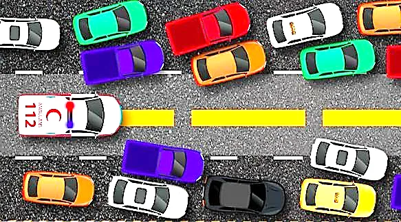

Giriş
Öncelikli kuyruğun temel işlemlerini ve kullanım alanlarını açıklamak.
Heap düzeni ve tam ikili ağaç özelliğini dizi gösterimiyle ilişkilendirmek.
Ekleme, kökü çıkarma ve öbek oluşturma adımlarını uygulamak.
İşlem maliyetlerini ve Heap Sort algoritmasını değerlendirmek.
Öncelikli Kuyruk ADT

Öncelikli Kuyruk ADT
Öncelikli Kuyruk ADT
Acil servise sırasıyla dört hasta geliyor (küçük sayı = daha acil):
| Geliş | 1. | 2. | 3. | 4. |
|---|---|---|---|---|
| Hasta (öncelik) | Ali (3) | Ece (1) | Can (2) | Naz (1) |
| Kuyruk (FIFO) | Ali | Ece | Can | Naz |
| Öncelikli kuyruk | Ece | Naz | Can | Ali |
Öncelikli Kuyruk ADT
Öncelikli Kuyruk ADT
| İşlem | Anlamı |
|---|---|
insert(k, v) | Ekleme: öğe, önceliğine göre yerini alır. |
removeMin() | Çıkarma: en yüksek öncelikli öğeyi çıkarır ve döndürür. |
min() | Sorgulama (peek): öğeyi döndürür, çıkarmaz. |
size() | Öğe sayısı. |
isEmpty() | Kuyruk boş mu? |
public interface PriorityQueue<K, V> { void insert(K key, V value); Entry<K, V> min(); // boşsa null Entry<K, V> removeMin(); // boşsa null int size(); boolean isEmpty(); }
Max-öncelikli kuyrukta aynı işlemler max() ve removeMax() adını alır. Bu bölümün kod örnekleri, orijinal sunumdaki gibi max-heap (ekle, silMax) kullanır.
Öncelikli Kuyruk ADT
| İşlem | Dönen değer | Kuyruğun içeriği |
|---|---|---|
insert(5, A) | { (5,A) } | |
insert(9, C) | { (5,A), (9,C) } | |
insert(3, B) | { (3,B), (5,A), (9,C) } | |
min() | (3,B) | { (3,B), (5,A), (9,C) } |
removeMin() | (3,B) | { (5,A), (9,C) } |
insert(7, D) | { (5,A), (7,D), (9,C) } | |
removeMin() | (5,A) | { (7,D), (9,C) } |
removeMin() | (7,D) | { (9,C) } |
removeMin() | (9,C) | { } |
removeMin() | null | { } boş kuyruk |
Liste ile Uygulama
insert: sona ekle → O(1)min, removeMin: tüm listeyi tara → O(n)insert: doğru yeri bul → O(n)min, removeMin: en küçük hep uçta → O(1)Liste ile Uygulama
Liste ile Uygulama
| İşlem | Sırasız liste | Sıralı liste | İkili heap |
|---|---|---|---|
size, isEmpty | O(1) | O(1) | O(1) |
insert | O(1) | O(n) | O(log n) |
min | O(n) | O(1) | O(1) |
removeMin | O(n) | O(1) | O(log n) |
| n öğeyle doldurma | O(n) | O(n log n)* | O(n)** |
* Önce sıralayarak. ** Aşağıdan yukarıya heap oluşturma ile (bu bölümün sonunda).
İkili Heap
Öncelikli kuyruğu uygulamak için en yaygın veri yapısıdır. İki koşulu birlikte sağlayan bir ikili ağaçtır:
İkili Heap
anahtar(ebeveyn) ≤ anahtar(çocuk)anahtar(ebeveyn) ≥ anahtar(çocuk)İkili Heap
İkili Heap
Her ağaç için karar verin: max-heap mi, min-heap mi, yoksa heap değil mi? Hangi özellik bozuluyor?
İkili Heap
Düğümlerin yanındaki küçük sayılar dizideki indeksleridir. Bu sunumda indeksler 0'dan başlar; kök heap[0]'dadır.
İkili Heap
(i - 1) / 2. Çocuk yoksa 2i + 1 ≥ n olur.Ekleme ve Silme
yuzdur.Ekleme ve Silme
Başlangıç max-heap: her ebeveyn ≥ çocukları. Dizi düzey düzey, soldan sağa tutulur.
ekle(10): 10, ilk boş konuma (indeks 7) eklenir. Ebeveyni: (7−1)/2 = 3 → 2.
10 > 2 → yer değiştir (indeks 7 ↔ 3).
10 > 3 → yer değiştir (indeks 3 ↔ 1).
10 > 9 → yer değiştir (indeks 1 ↔ 0). Kök → dur.
ekle(8): 8, ilk boş konuma (indeks 8) eklenir. Ebeveyni: (8−1)/2 = 3 → 3.
8 > 3 → yer değiştir (indeks 8 ↔ 3). Yeni ebeveyn 9 (indeks 1) ≥ 8 → dur.
Ekleme ve Silme
ekle(4): heap boş; 4 köke (indeks 0) yerleşir.
ekle(5): 5, ilk boş konuma (indeks 1) eklenir. Ebeveyni: (1−1)/2 = 0 → 4.
5 > 4 → yer değiştir (indeks 1 ↔ 0). Kök → dur.
ekle(2): 2, ilk boş konuma (indeks 2) eklenir. Ebeveyni: (2−1)/2 = 0 → 5. 2 ≤ 5 → yer değiştirme yok.
ekle(6): 6, ilk boş konuma (indeks 3) eklenir. Ebeveyni: (3−1)/2 = 1 → 4.
6 > 4 → yer değiştir (indeks 3 ↔ 1).
6 > 5 → yer değiştir (indeks 1 ↔ 0). Kök → dur.
Dizi dolu → buyut: kapasite 4 → 8. ekle(1): 1, ilk boş konuma (indeks 4) eklenir. Ebeveyni: (4−1)/2 = 1 → 5. 1 ≤ 5 → yer değiştirme yok.
ekle(3): 3, ilk boş konuma (indeks 5) eklenir. Ebeveyni: (5−1)/2 = 2 → 2.
3 > 2 → yer değiştir (indeks 5 ↔ 2). Yeni ebeveyn 6 (indeks 0) ≥ 3 → dur.
Ekleme ve Silme
public class MaxHeap { private int[] heap = new int[4]; private int n = 0; // eleman sayısı public void ekle(int x) { if (n == heap.length) buyut(2 * heap.length); heap[n] = x; // ilk boş konum n++; yuzdur(n - 1); } private void yuzdur(int k) { // up-heap while (k > 0 && heap[(k - 1) / 2] < heap[k]) { yerDegistir(k, (k - 1) / 2); k = (k - 1) / 2; } }
Ekleme ve Silme
Ekleme ve Silme
silMax(): max = heap[0] = 9 (kök); döndürülecek değer.
Kök ile son öğe yer değiştirir (0 ↔ 6); n = 6, 9 heap'in dışında. Yeni kök 4 özelliği bozabilir → down-heap.
Çocuklar: 3 ve 6 → büyük olan 6. 4 < 6 → yer değiştir (0 ↔ 2).
Tek çocuk 5; 4 < 5 → yer değiştir (2 ↔ 5). İndeks 5 yaprak → dur.
Ekleme ve Silme
silMax() #1: max = heap[0] = 10 (kök); döndürülecek değer.
Kök ile son öğe yer değiştirir (0 ↔ 8); n = 8, 10 heap'in dışında. Yeni kök 3 özelliği bozabilir → down-heap.
Çocuklar: 9 ve 6 → büyük olan 9. 3 < 9 → yer değiştir (0 ↔ 1). 3 ≥ yeni çocukları 2 ve 1 → dur.
silMax() #2: max = heap[0] = 9 (kök); döndürülecek değer.
Kök ile son öğe yer değiştirir (0 ↔ 7); n = 7, 9 heap'in dışında. Yeni kök 0 özelliği bozabilir → down-heap.
Çocuklar: 3 ve 6 → büyük olan 6. 0 < 6 → yer değiştir (0 ↔ 2).
Çocuklar: 5 ve 4 → büyük olan 5. 0 < 5 → yer değiştir (2 ↔ 5). İndeks 5 yaprak → dur.
Ekleme ve Silme
public int silMax() { if (n == 0) throw new NoSuchElementException(); int max = heap[0]; yerDegistir(0, n - 1); // son öğe köke n--; batir(0); if (n > 0 && n == heap.length / 4) // ¼ dolu kucult(heap.length / 2); return max; } private void batir(int k) { // down-heap while (2 * k + 1 < n) { // sol çocuk var mı? int j = 2 * k + 1; if (j + 1 < n && heap[j] < heap[j + 1]) j++; if (heap[k] >= heap[j]) break; yerDegistir(k, j); k = j; } }
Ekleme ve Silme
Başlangıç min-heap: her ebeveyn ≤ çocukları; en küçük öğe (2) kökte.
insert(1): 1, ilk boş konuma (indeks 7) eklenir. Ebeveyni: (7−1)/2 = 3 → 9.
1 < 9 → yer değiştir (indeks 7 ↔ 3).
1 < 5 → yer değiştir (indeks 3 ↔ 1).
1 < 2 → yer değiştir (indeks 1 ↔ 0). Kök → dur.
removeMin(): min = heap[0] = 1 (kök); döndürülecek değer.
Kök ile son öğe yer değiştirir (0 ↔ 7); n = 7, 1 heap'in dışında. Yeni kök 9 özelliği bozabilir → down-heap.
Çocuklar: 2 ve 3 → küçük olan 2. 9 > 2 → yer değiştir (0 ↔ 1).
Çocuklar: 5 ve 6 → küçük olan 5. 9 > 5 → yer değiştir (1 ↔ 3). İndeks 3 yaprak → dur.
Ekleme ve Silme
| İşlem | Maliyet | Neden? |
|---|---|---|
size, isEmpty | O(1) | n sayacı tutulur |
max / min (peek) | O(1) | Öğe hep heap[0]'dadır |
ekle (insert) | O(log n)* | Up-heap: yapraktan köke tek yol |
silMax (removeMin) | O(log n)* | Down-heap: kökten yaprağa tek yol |
| Rastgele öğeyi arama | O(n) | Heap sıralı değildir; arama için uygun değil |
* Dizi büyütme/küçültme dahil amortize maliyet. Yükseklik ⌊log₂ n⌋: n = 10⁶ öğede en çok 19 yer değiştirme.
Heap Oluşturma ve Heap Sort
for (int i = n / 2 - 1; i >= 0; i--) // son iç düğümden köke batir(i); // alt ağaçları heap olan i'yi batır
Heap Oluşturma ve Heap Sort
Sıradan bir dizi (heap değil). Yapraklar (indeks 5…9) zaten heap. Son iç düğüm 10/2 − 1 = 4'ten köke doğru her düğüme down-heap.
i = 4: 16 (indeks 4) ≥ çocuku 7 → dur.
i = 3: Çocuklar: 14 ve 8 → büyük olan 14. 2 < 14 → yer değiştir (3 ↔ 7). İndeks 7 yaprak → dur.
i = 2: Çocuklar: 9 ve 10 → büyük olan 10. 3 < 10 → yer değiştir (2 ↔ 6). İndeks 6 yaprak → dur.
i = 1: Çocuklar: 14 ve 16 → büyük olan 16. 1 < 16 → yer değiştir (1 ↔ 4).
i = 1 (devam): Tek çocuk 7; 1 < 7 → yer değiştir (4 ↔ 9). İndeks 9 yaprak → dur.
i = 0: Çocuklar: 16 ve 10 → büyük olan 16. 4 < 16 → yer değiştir (0 ↔ 1).
i = 0 (devam): Çocuklar: 14 ve 7 → büyük olan 14. 4 < 14 → yer değiştir (1 ↔ 3).
i = 0 (devam): Çocuklar: 2 ve 8 → büyük olan 8. 4 < 8 → yer değiştir (3 ↔ 8). İndeks 8 yaprak → dur. Sonuç: max-heap.
Heap Oluşturma ve Heap Sort
| Düğümün yüksekliği | Düğüm | En çok takas | Toplam |
|---|---|---|---|
| 0 (yapraklar) | 8 | 0 | 0 |
| 1 | 4 | 1 | 4 |
| 2 | 2 | 2 | 4 |
| 3 (kök) | 1 | 3 | 3 |
| n = 15 | 11 |
Heap Oluşturma ve Heap Sort
Heap Oluşturma ve Heap Sort
Aşama 1 bitti: dizi max-heap. Aşama 2: kökü (en büyük) sona al, heap'i küçült, down-heap.
Kök 6 ile indeks 5'deki 2 yer değiştirir; 6 yerine oturdu, heap boyutu = 5.
Çocuklar: 5 ve 3 → büyük olan 5. 2 < 5 → yer değiştir (0 ↔ 1).
Çocuklar: 4 ve 1 → büyük olan 4. 2 < 4 → yer değiştir (1 ↔ 3). İndeks 3 yaprak → dur.
Kök 5 ile indeks 4'deki 1 yer değiştirir; 5 yerine oturdu, heap boyutu = 4.
Çocuklar: 4 ve 3 → büyük olan 4. 1 < 4 → yer değiştir (0 ↔ 1).
Tek çocuk 2; 1 < 2 → yer değiştir (1 ↔ 3). İndeks 3 yaprak → dur.
Kök 4 ile indeks 3'deki 1 yer değiştirir; 4 yerine oturdu, heap boyutu = 3.
Çocuklar: 2 ve 3 → büyük olan 3. 1 < 3 → yer değiştir (0 ↔ 2). İndeks 2 yaprak → dur.
Kök 3 ile indeks 2'deki 1 yer değiştirir; 3 yerine oturdu, heap boyutu = 2.
Tek çocuk 2; 1 < 2 → yer değiştir (0 ↔ 1). İndeks 1 yaprak → dur.
Kök 2 ile indeks 1'deki 1 yer değiştirir; 2 yerine oturdu, heap boyutu = 1. Dizi sıralı: [1, 2, 3, 4, 5, 6].
Heap Oluşturma ve Heap Sort
public static void heapSort(int[] a) { int n = a.length; for (int i = n / 2 - 1; i >= 0; i--) // 1) oluştur batir(a, i, n); for (int son = n - 1; son > 0; son--) { // 2) sırala yerDegistir(a, 0, son); // en büyük sona batir(a, 0, son); // heap boyutu = son } } static void batir(int[] a, int k, int n) { while (2 * k + 1 < n) { int j = 2 * k + 1; if (j + 1 < n && a[j] < a[j + 1]) j++; if (a[k] >= a[j]) break; yerDegistir(a, k, j); k = j; } }
Heap Oluşturma ve Heap Sort
Genel fikir: tüm öğeleri öncelikli kuyruğa ekle, sonra n kez removeMin ile sırayla çıkar. Hangi sıralamayı elde ettiğimiz uygulamaya bağlıdır:
| Uygulama | n × insert | n × removeMin | Ortaya çıkan algoritma |
|---|---|---|---|
| Sırasız liste | O(n) | O(n²) | Seçmeli sıralama (selection sort), O(n²) |
| Sıralı liste | O(n²) | O(n) | Eklemeli sıralama (insertion sort), O(n²) |
| İkili heap | O(n log n) | O(n log n) | Heap sort, O(n log n) |
Heap Oluşturma ve Heap Sort
PriorityQueue<Integer> pq = new PriorityQueue<>(); pq.offer(5); pq.offer(1); pq.offer(8); pq.peek(); // 1 (min-heap, O(1)) pq.poll(); // 1 (O(log n)) // max-heap için ters karşılaştırıcı PriorityQueue<Integer> maxPq = new PriorityQueue<>(Comparator.reverseOrder()); // hasta: öncelik küçük olan önce PriorityQueue<Hasta> acil = new PriorityQueue<>( Comparator.comparingInt(h -> h.oncelik));
offer/poll O(log n); peek, size O(1); remove(nesne) ve contains O(n).PriorityBlockingQueue tercih edilir.Özet
| İşlem | Heap | Nasıl? |
|---|---|---|
| peek (max/min) | O(1) | heap[0] |
| ekle | O(log n) | heap[n]'e koy, up-heap |
| silMax / removeMin | O(log n) | son öğeyi köke taşı, down-heap |
| heap oluşturma | O(n) | ⌊n/2⌋ − 1'den 0'a down-heap |
| heap sort | O(n log n) | oluştur + n − 1 kez kökü sona al |
Özet
Bu bölümdeki işlemleri kendi değerlerinizle adım adım deneyin:
Özet
silMax() uygulayın. Dönen değer ve yeni dizi nedir?Özet
PriorityQueue API belgesi.← → veya boşluk ile gezinin · F: tam ekran · Home/End: ilk/son slayt